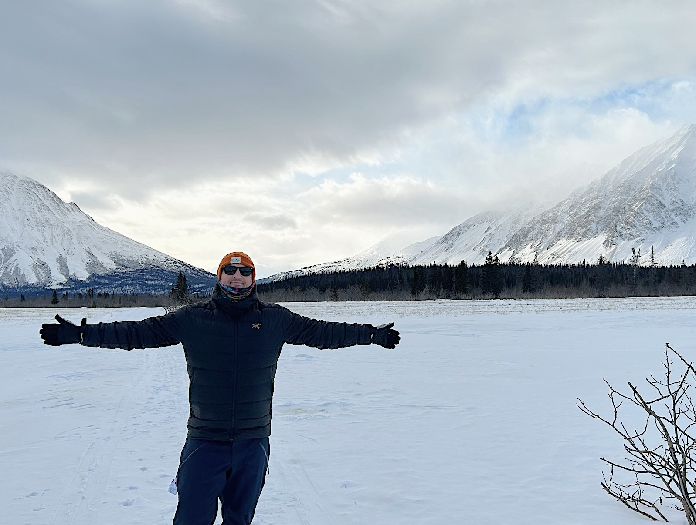

Originaire du Québec, ma famille a déménagé à Whitehorse, au Yukon, quand j'avais huit ans.
Grandir dans le Nord m'a donné très tôt une appréciation pour le plein air et les enjeux
environnementaux, ce qui m'a éventuellement mené à un baccalauréat en conservation des
ressources naturelles à UBC. C'est là que j'ai découvert les SIG, un domaine qui a
immédiatement résonné avec mon amour de la résolution de problèmes techniques et de la
pensée globale. J'ai eu la chance d'acquérir une expérience pratique au studio de
télédétection intégrée de UBC, en soutenant la recherche des étudiants diplômés en
télédétection et en analyse SIG.
Après l'obtention de mon diplôme, j'ai travaillé pour le gouvernement du Yukon comme
technicien SIG au programme de classification écologique des paysages, combinant travail de
terrain estival et production de cartes écologiques.
Souhaitant vivre à l'étranger, j'ai ensuite déménagé à Munich, en Allemagne, où j'ai
travaillé comme planificateur SIG pour MRK Media AG, contribuant au déploiement
d'infrastructures de fibre optique dans le sud de l'Allemagne.
À mon retour au Canada, je cherchais quelque chose de différent : un défi professionnel qui
mettrait ma résilience à l'épreuve et offrirait un impact immédiat et tangible. Cela m'a
attiré vers les services d'urgence. Ce qui avait commencé comme un détour du travail de
bureau est devenu une carrière avec BC Emergency Health Services, d'abord comme paramédic,
puis comme superviseur de répartition.
Les services d'urgence m'ont apporté un travail significatif, de la résilience et des
compétences en leadership, mais ils ont aussi changé ma perspective. Intervenir dans des
communautés diversifiées m'a permis de comprendre de première main comment l'infrastructure
et les risques environnementaux façonnent la vie des gens. Ayant accompli ce que je m'étais
fixé dans les services d'urgence, il était temps de renouer avec les SIG — cette fois en
appliquant ces compétences à la compréhension et à l'atténuation des risques réels grâce à
la technologie géospatiale.
Je termine actuellement le diplôme avancé en SIG du BCIT tout en travaillant chez NOAH
Intelligence, où je prépare les jeux de données géospatiales qui alimentent des modèles de
risques d'inondation à l'échelle de la propriété. J'ai très hâte de voir ce que l'avenir me
réserve.